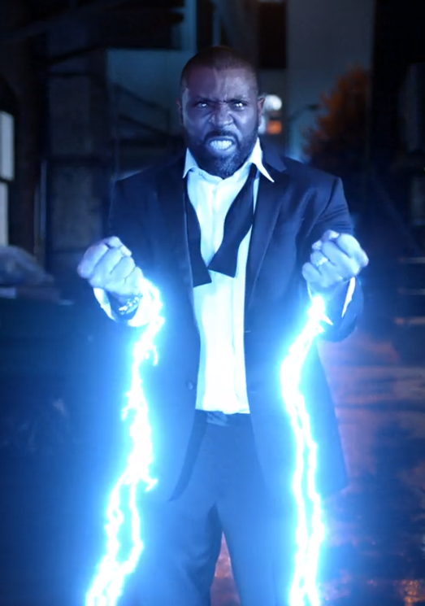
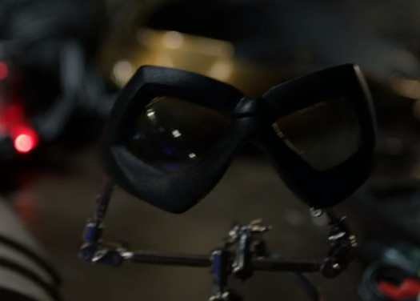
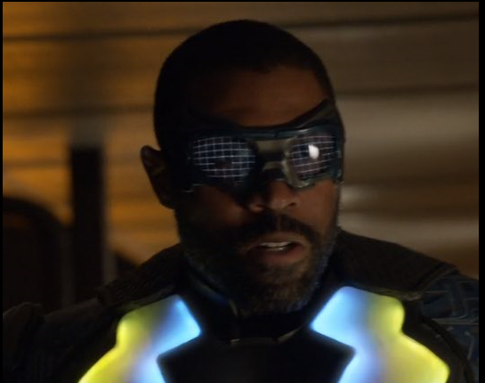
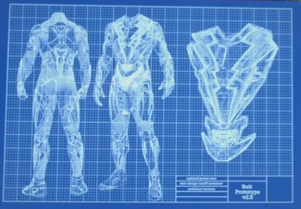
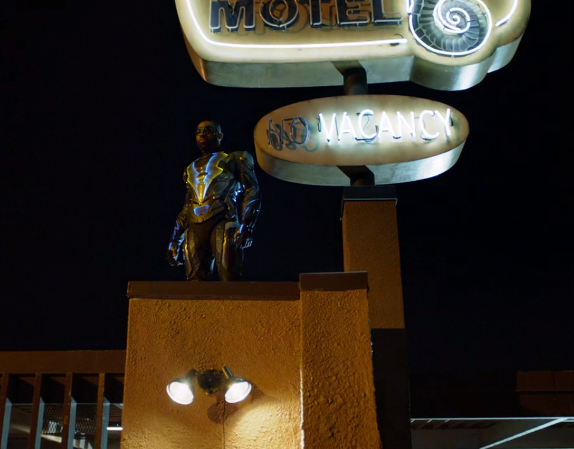

Hace ya un tiempo que Jefferson Pierce era uno de los grandes defensores de la ciudad por su superpoder de control de la electricidad. Bajo la identidad de Black Lightning, se dedicaba a luchar contra el crimen y la delincuencia en las calles de Nueva Orleans. Sin embargo, esos días quedaron atrás y Pierce se ha convertido en un hombre que ha colgado su traje en lo más profundo del armario y tiene una vida completamente normal, en la que se puede dedicar a su familia y su comodidad. Todo cambia cuando una de sus hijas, una estudiante modelo que quiere luchar por la justicia, es reclutada por una banda local. Y Pierce no va a permitirlo. [1]
Todas las interfaces imaginarias de esta serie se basan en la necesidad del protagonista de proteger a su ciudad, puesto que es un Superhéroe y las interfaces imaginarias como el disfraz o los rayos son para la protección.
16:12
Esta interfaz imaginaria se crea con la necesidad de darle al superhéroe la capacidad de defender a los ciudadanos con un poder superior al resto..
34:52
Estas gafas se crean con la necesidad de ocultar la identidad del superhéroe, lo que las hace imaginarias es tener una visión especial a través de ellas y un modulador de voz..
 35:11
Este traje le da al superheroe muchas capacidades para estar por encima de sus rivales. Se crea con la necesidad de proteger a nuestro protagonista.
 Para la primera interfaz, necesitaríamos algo capaz de controlar los rayos, tendría que utilizar los estudios de Tesla. Para las gafas, unas gafas capaces de modular la voz, no sería muy difícil de implementar con un micrófono y un altavoz cercanos a ellas, pero darle visión especial necesitaría una tecnología inventada, capaz de atravesar paredes, medir calor, ver armas y demás objetos peligrosos y cambiar de cristal a placer. El traje supongamos que está hecho de cuero o algún material similar resistente. Solo necesitaríamos la tecnología capaz de controlar campos de fuerza sobrepuesto en el traje que le protege de golpes, balazos, etc….
Una “tecnología” disponible en el momento de la producción sería un chaleco antibalas, que se refleja en el traje de nuestro superhéroe, puesto que esta protegido de las balas por medio de un “campo de fuerza” eléctrico. Gafas térmicas, modulador de voz. .
La mayoría de las tecnologias creadas para esta seria vienen infundadas en tecnologias imaginadas. La capacidad de lanzar rayos, campos de fuerza visibles que protegen a nuestro superhéroe, vision especial a traves de las gafas….
Ha tenido poco impacto puesto que las interfaces inventadas en esta serie son todas en base a un superhéroe, armas y súper traje, por lo que no tiene un impacto serio y real sobre nuevas tecnologías.